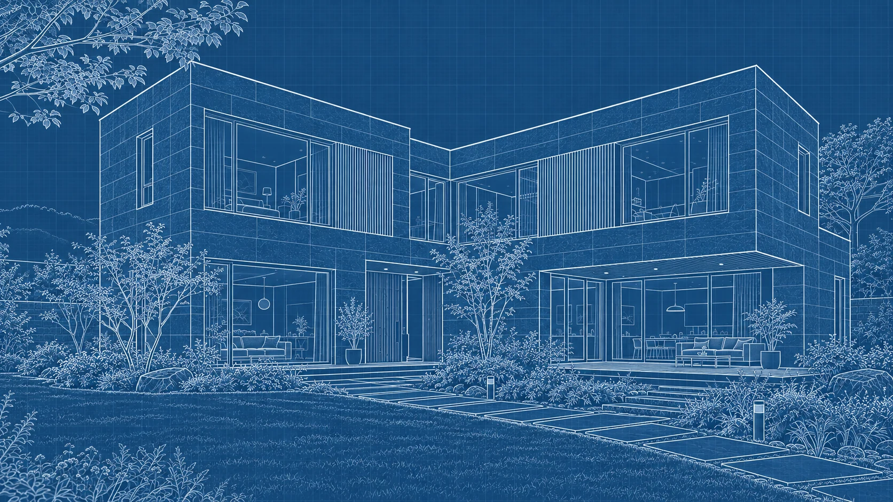
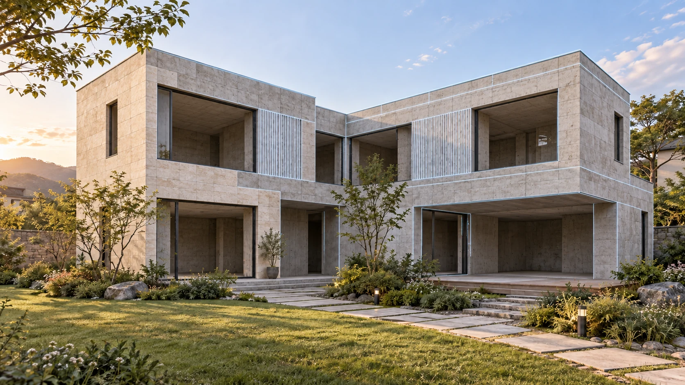

도현의 약속
삶을 담는 공간.
오래 머무는 집.
- 생활 방식에 맞춘 공간
- 품질과 관리를 생각한 집
- 단계마다 함께하는 소통
생활 방식에서 시작하는 맞춤 주택.



설계 · 생활에서 시작
도현 코트야드 하우스 · 맞춤 주택 제안
도현의 약속
진행 과정
생활 방식과 부지 조건을 살펴봅니다.
공간과 재료의 방향을 정합니다.
범위와 일정, 확인할 지점을 협의합니다.
진행을 함께 확인하고 완성 후 안내합니다.
자주 묻는 질문
생각 중인 지역과 원하는 생활 방식에서 이야기를 시작할 수 있습니다. 실제 부지 검토와 상담 범위는 운영 단계에서 확인합니다.
전국에서 상담을 받는 방향입니다. 실제 시공 가능 여부와 조건은 부지와 현장 상황을 확인한 뒤 협의합니다.
도현종합건설의 방향을 보여주는 AI 가상 주택 콘셉트입니다. 실제 시공 사진이나 측정이 완료된 설계 도면을 의미하지 않습니다.
실거주 주택을 중심으로, 가족이 머무는 세컨드 하우스와 별장의 방향도 함께 이야기합니다. 구체적인 범위는 상담에서 협의합니다.
부지 조건, 규모, 공간과 재료에 따라 계획이 달라집니다. 이번 데모에서는 가격이나 견적을 임의로 제시하지 않습니다.
정식 서비스에서는 담당자가 희망 일시를 확인한 뒤 연락드립니다. 이번 데모에서는 실제 예약이 접수되지 않습니다.
생활 방식과 부지 조건부터 살펴봅니다.